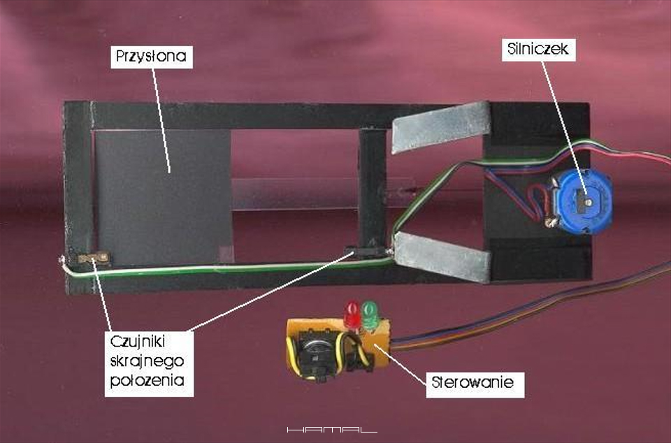
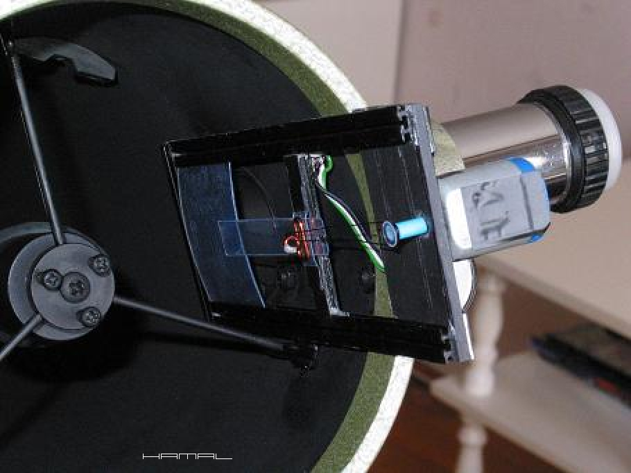
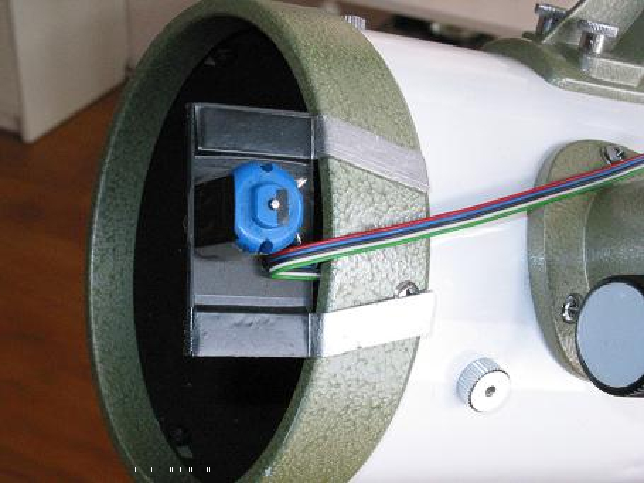
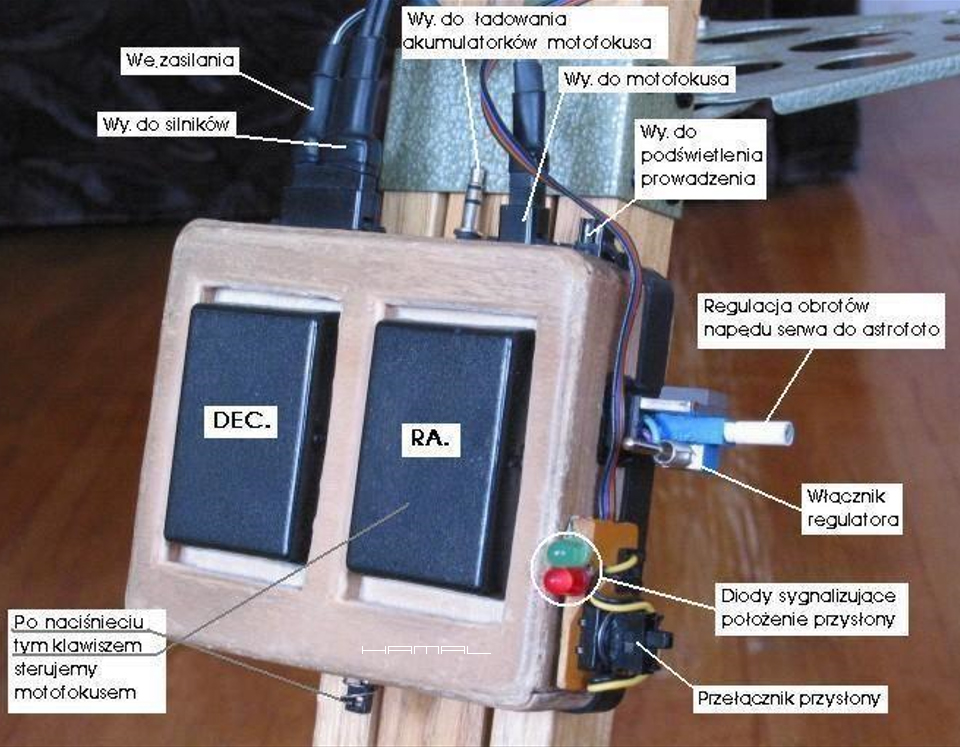
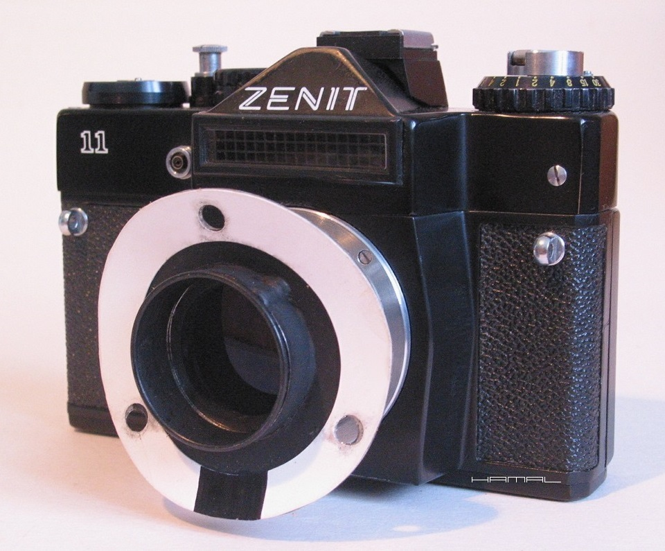
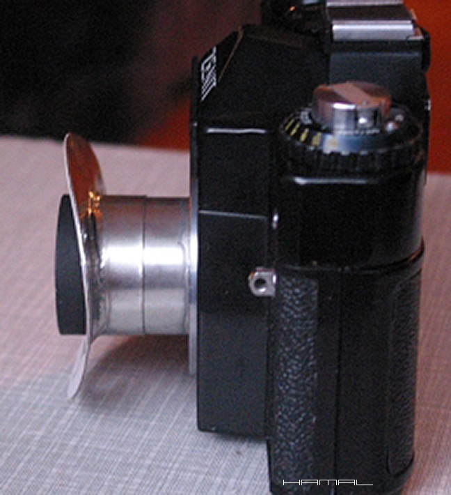
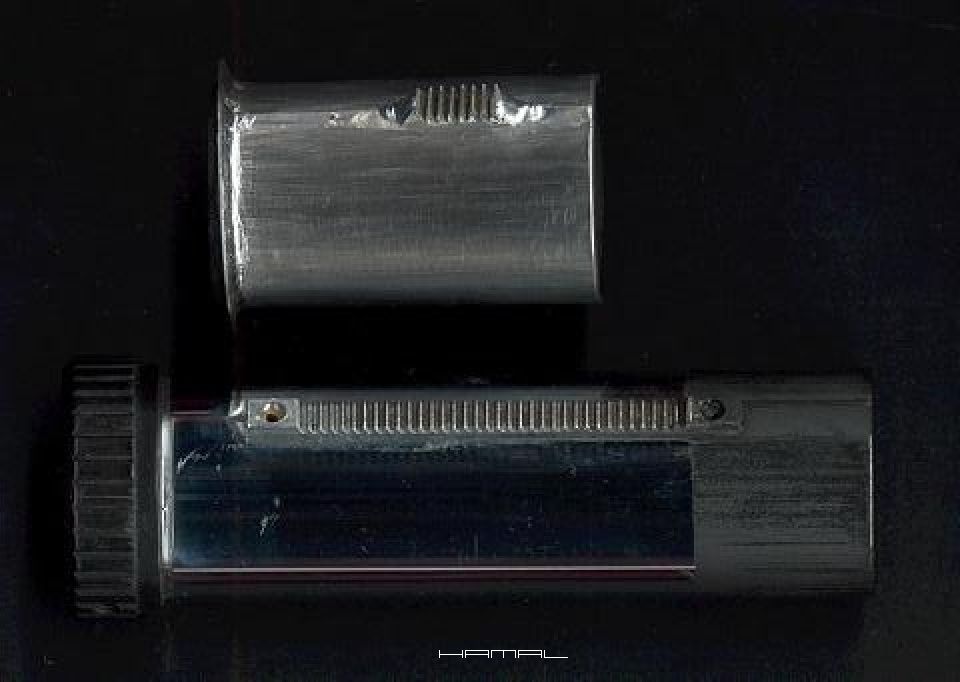
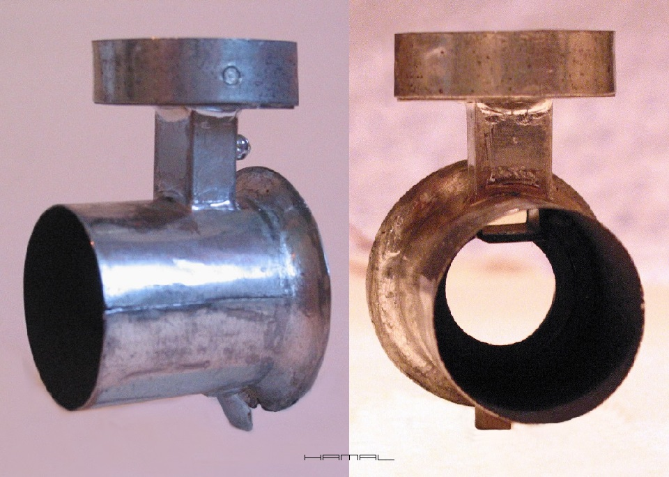

.
chmurka? - podmuch wiatru? - samolot? - satelita? - AUT !
|
WSTĘP . Gdy w 2001r stawiałem pierwsze kroki w astrofotografii wykonywanej na kliszy/filmie, nie zdawałem sobie sprawy z tego, jak ciężkie jest to rzemiosło i jak wiele wyzwań mnie czeka. Po uporaniu się z kwestiami napędów montażu i pojawieniu się możliwości wykonywania zdjęć z długimi czasami pojawił się problem losowych psikusów w postaci zabłąkanych chmurek, lecących w kadr samolotów czy satelitów. Bo wiedzieć należy, że gdy robisz na kliszy zdjęcie z czasem 30-40 minut, pilnując w trwodze każdej jego sekundy, nie masz zbyt wielu możliwości, gdy coś postanowi ci ten nieprzerywalny proces zakłócić. Gdy masz 24 lub 36 klatek kliszy, nadto każda nieuwaga sprawia, że zaczynasz od nowa, inaczej zapatrujesz się na zdarzenia losowe od ciebie niezależne. Wpadłem wtedy (2002r-2003r) na pomysł, że przecież w chwilach "grozy" można by próbować odciąć kliszy dopływ nasycającego ją obrazu, a po ustąpieniu zagrożenia, kontynuować jej naświetlanie obrazem właściwym. W pierwszym odruchu człek by chciał zakładać dekiel u wlotu tubusu teleskopu, co by dało pożądany efekt, jednak, z uwagi na wprowadzane drgania, oraz, każdorazową konieczność odrywania się od lunetki guidującej, pomysł nie był do zastosowania. W drugim odruchu pomyślałem, że można by zrobić zmechanizowaną klapę u wlotu tubusu teleskopu i w ten sposób odcinać dopływ obrazu do filmu, jednak z uwagi na jej rozmiary i wagę z powodu bezwładności, i w moim przypadku, dużą jak na kliszę skalę obrazowania, i to rozwiązanie nie mogło się sprawdzić. W trzecim odruchu pomyślałem, że przecież wystarczy, za pomocą małej lekkiej i szybkiej przysłony, odcinać obraz w tubusie teleskopu u wlotu tulei wyciągu okularowego, i tak uczyniłem. OPIS . Z plastikowej listwy z rowkami, pozyskanej z wycieraczki samochodowej, wykonałem ramę główną. W rowkach umieściłem przesuwaną przysłonę. Dodałem silniczek DC, styki skrajne i prymitywne sterowanie, wpinane w pudełko sterujące teleskopem, aby uzyskać coś, co odmieniło moje ciężkie życie astrofotografa na kliszy. :) Posiadając takie urządzenie, wystarczyło w chwilach nadlatujących niebezpieczeństw, wcisnąć przycisk przemieszczający przysłonę przed otwór tulei wyciągu okularowego, aby aparat fotograficzny na pożądany czas widział jedynie ciemność, natomiast po ustąpieniu zagrożenia, wystarczyło wcisnąć przycisk odsuwający przysłonę sprzed otworu tulei wyciągu okularowego, aby ponownie do aparatu fotograficznego docierał obraz generowany przez teleskop. Aby mieć pewność, że wszystko poszło, jak należy, i przysłona zamknęła lub otworzyła się do samego końca, zainstalowałem skrajne czujniki, które za pomocą diod LED informowały o położeniu przysłony. Dzięki temu, że przesłona jest mała i lekka, oraz z uwagi na fakt, iż jej przemieszczanie następuje wzdłuż tuby teleskopu, nie stanowiła ona źródła drgań, ani sił, które by powodowały odchylenia teleskopu od pożądanej trajektorii śledzenia nieba, a że wykonywałem astrofotografię słabej jakości sprzętem (samodzielnie zmotoryzowanym Optisan 114/900), a mimo to, w naprawdę wielkiej jak na czasy astrofotografii kliszowej skali, byłem zmuszony dbać o takie kwestie, by ślęczenie godzinami z okiem przy lunetce prowadzącej nie poszło na marne. PRZYSŁONA EKSPOZYCYJNA - BUDOWA .  PRZYSŁONA EKSPOZYCYJNA - ZAMONTOWANA NA TELESKOPIE .  PRZYSŁONA EKSPOZYCYJNA - ZAMONTOWANA NA TELESKOPIE .  PRZYSŁONA EKSPOZYCYJNA - STEROWANIE TELESKOPU .  Do fotografowania nieba demontowałem oryginalny wyciąg okularowy i w jego miejsce instalowałem aparat Zenit za pomocą polutowanej z blachy przystawki stanowiącej jednocześnie gniazdo dla soczewki pracującej jako reduktor ogniskowej z 900mm do 500mm. .   Gdy z czasem dopracowałem prowadzenie ogniskowej 500mm zapragnąłem zaszaleć i porwać się na pełne 900mm, jednak w tym celu byłem zmuszony stworzyć krótszą tuleję do oryginalnego korpusu wyciągu okularowego, tak dobraną, aby nie wchodziła do tubusu teleskopu i nie wadziła opisywanej tu przysłonie. Jak zwykle, blacha i lutownica poszły w ruch, chwila moment, dedykowana tuleja z zębatką gotowa :) .  W swym szaleństwie zlutowałem z blachy nawet takiego OAG-a, ale on już się nie załapał do roboty, bo nadeszły czasy PHILIPS 840K i astrofotografii cyfrowej CCD, ale to już inna historia :) .  Rok 2004 wiosną - w kadrze Łańcuch Markariana - proces ustawiania ostrości, w Zenicie na kliszy to było wyzwanie. .  . Widoczne żółte LEGO pneumatic podłączone do wężyka spustowego aparatu, pozwalające bez drgań otworzyć i zamknąć migawkę. 
|